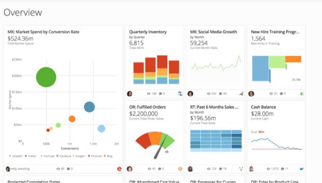

Recent filter changes have not been saved to this page
Recruiter Schedule
0
Link Related Card
Mark all as read
Manage Settings
Show Keyboard ShortcutsControl+/
Domo is one click away!
You can always get back to Buzz. To exit Buzz's fullscreen mode, use this button.

Favorites0
Data0
People0
@Mention
Mark conversations as read?
Reorder
No unread mentions
Conversations containing ''
DomoSupport34m
You:
@DomoSupport Hey Max, thank you for the response. Is there anyone from the development team that I can talk to? Maybe there is something else I can do to get the results I want. I basically want to print out just the app and none of the Domo headers.
Bill SeacrestMay 31
You:
I've added you to the PDP for these reports
Rickee PointerMay 11
You:
You've been added
James CraneMar 14
You:
That works, did you want to meet in your office?
James Crane, Jasmine Dortch, Sandra RookeyMar 7
You:
thank you
Kathryn BeckFeb 14
You:
I'll have to create a new card, how did you want the information displayed? by team? or just the number of quickturns/standards year to date?
Jonathon WigginsJan 31
You:
if you want to make some of the columns narrow and leave one large you can adjust it that way.
DE
DefaultJan 30
You:
Jasmine Dortch deleted the thread Domo training..
Chris HeaneyJan 5
You:
Perfect! Thanks for the info and all the great work you are doing!
Teresa BarberDec 15
You:
You are awesome... thank you so much, Jasmine!
Sherrie MitchellDec 8
You:
are you in Jasmine?
Alisa SkultetyDec 8
You:
Thank you! @Jasmine Dortch
Christopher BerubeDec 7
You: Attachment posted
Bill SeacrestDec 6
You:
Great! Thanks!
Bill HueterNov 30
You:
Thank you.
Ted GorderNov 22
You:
@Ted Gorder let me know if you need anything else
Domo Buzz TrainingNov 22
New Conversation
Chris Berube, Chris Harline, DomoSupport, Jasmine Dortch, Jay Kania, Sandra RookeyNov 15
You:
Yep, no worries.
DomoRestAPIUser
!M$d0m0bot
Activity LogNov 2
New Conversation
Tim and Marie Domo TrainingOct 27
You:
😊
Bullhorn ConnectorOct 21
You:
@Sandra Rookey - I would start by checking with Search Discovery. They should be able to help. Don't spend your hours having them research how to solve it though. If they know how then let them run with it. If they're unsure let me know and I'll see if I can get a quick call set up with my Bullhorn guy here internally. Search Discovery will be more responsive initially and my internal resource will want to make sure we've explored that route first.
Chris HarlineOct 5
You:
@Chris Harline Ok thank you
Sandra RookeySep 14
You:
Couldn't agree more.
Jasmine Dortch, Jay Kania, Sandra RookeySep 8
You:
:thumbsup::smiley_cat::smile_cat::smirk_cat:
Jasmine DortchSep 2
New Conversation
Chris Harline, DomoSupport, Jasmine DortchAug 19
New Conversation
Chris Harline, DomoSupport, Jasmine Dortch, Jay Kania, Sandra Rookey, Stuart RoachAug 17
New Conversation
Jay KaniaJul 28
You:
@Jasmine Dortch Will you add me to a PDP security policy for the DataSet "CM Scorecard Info"? I need access to the data for the card "CM Productivity Points"
Domo Development Requests [Old]Feb 21Updated ConversationsNo Unread Activity
GeneralJun 5
You:
Rebecca Ross just logged in for the first time!
Tracking Client Contact Status Change UpdatedJun 8Updated ConversationsNo Unread Activity
Minor Development ProjectsJun 7Updated ConversationsNo Unread Activity
FTBs by YearJun 7Updated ConversationsNo Unread Activity
FTBs Added by CMJun 7Updated ConversationsNo Unread Activity
Type "/support " with a description of your issue to create a support ticket
July 14, 2016
Thread
@Jasmine Dortch I don't see what happened to the previous conversation (that I copied above). Is this the correct Buzz chat?
Public Thread
Most Recent Message:
DomoSupportThu, Jul 14 12:01 PM
@Jasmine Dortch I don't see what happened to the previous conversation (that I copied above). Is this the correct Buzz chat?
August 5, 2016
Thread
@DomoSupport Hello, I am currently working on a SQL dataflow that I need some assistance on. Currently when I run the dataflow it is only returning one row. I cannot see why it is doing this. The dataflow is called "Top Earning Jobs by CM, SQL" I tried...
Public Thread
Most Recent Message:
DomoSupportFri, Aug 5 4:17 PM
Jasmine,
Thank you for contacting Domo Support. When the next support technician becomes available, he or she will look into why it's only returning one row and how it can be resolved. A support technician will remain in contact with you about the status of this case. We are experiencing a higher than normal volume of incoming cases and apologize for any delay this causes in getting your case resolved. We appreciate your patience. If you are in need of immediate support, please contact us at 801-805-9505.
For your reference, your case number is 02227667.
Thanks, Kruse Collins Domo Support
Thread
@DomoSupport Hello, I created a beast mode calculation that says it is returning a syntax error, but it is not elaborating on what that syntax is. Can you help me? The beast mode calculation is located on the card "Long List Management" on the Page "Re...
Public Thread
Most Recent Message:
Jasmine DortchMon, Aug 8 1:21 PM
No, Thank you so much for your help! it worked perfectly!
September 12, 2016
DomoSupport
Mon, Sep 12 6:13 PM CDT
/Support Hello, I was wondering if there was a way to assign different colors on the pie chart depending on the team? That's what this card is doing. However, not every week will have all 6 teams. So I need a way to assign colors so when gold team does not have anything that is does not mess with the color. Is there a way to do this?
Thread
Jasmine,
Thank you for contacting Domo Support.
When the next support technician becomes available, we will look into coloring your pie chart. To ensure that we are troubleshooting the correct issue, can you please reply with the name of the card in q...
Private Thread
Most Recent Message:
Jasmine DortchThu, Sep 15 8:52 AM
Thank you
September 23, 2016
Jasmine Dortch
Fri, Sep 23 9:36 AM CDT
Message deleted.
Jasmine Dortch
Fri, Sep 23 9:39 AM CDT
@DomoSupport /support Hello I am experiencing a problem with a beast mode calculation I have created on this card --> https://ims-expertservices.domo.com/page/506003403/kpis/details/376177676 . I am receiving an error when trying to validate my beast mode calculation. The calculation is called "Research Due Date Colored". This beast mode calculation is kind of complex in a way, it is going to be used to set the background color of the table box depending on the case statement. Right now on lines 7&8 of the beast mode calculation is the area where I am running into a problem. I'm not sure why it is happening since beast mode error messages are very vague lol Basically, I need to see if the current date is 1 date before the research due date. I cannot seem to make it work. Can you help me?
I have created a new Beastmode named "Research Test" that has corrected the syntax errors. There were two that were stopping this from validating, the first is Beastmode syntax calls for -- rather than # for a single line comment. The second, was your first when statement was resolving as a string, whereas the other two when statements were resolving as Dates, after applying a string to date on your first when the Beastmode has validated.
Could you take a look and let me know if that answers the questions?
Thank you, -Jay Heim
September 27, 2016
Jasmine Dortch
Tue, Sep 27 7:36 AM CDT
Yes that answers my questions. Thank you so much for your help
September 29, 2016
Jasmine Dortch
Thu, Sep 29 7:57 AM CDT
Message deleted.
October 4, 2016
Thread
@DomoSupport
Private Thread
Most Recent Message:
Jasmine DortchTue, Oct 4 9:28 AM
@DomoSupport It's been almost a week since I asked this question. and I have gotten no response.
Jasmine Dortch
Tue, Oct 4 8:45 AM CDT
Message deleted.
Thread
@DomoSupport
Private Thread
Most Recent Message:
Jasmine DortchTue, Oct 4 8:45 AM
@DomoSupport
March 16, 2017
Jasmine Dortch
Thu, Mar 16 11:15 AM CDT
@DomoSupport /Support This morning I created a custom app/card named Domo Overview: Keys to the Castle, It has links on the card but for some reason it is not clickable, you have to right click and then select open link in new tab. Is this how it will need to work, or did I forget a step? Thank you
DomoSupport
Thu, Mar 16 12:26 PM CDT
Hi Jasmine,
And thank you for contacting Domo Support.
As soon as the next Technical Associate is available, they will investigate the reason you aren’t able to click the links in your card, and help answer your questions. To help expedite your case, will you provide us with a link to the card you’re working on, and share it with Domo Support? Your case number is 03143283. Thanks, Jasmine.
Can I get the Ai file used to create this and I will talk to my dev team about this.
Thanks
-Ausitn B Domo Support
March 24, 2017
DomoSupport
Fri, Mar 24 10:21 AM CDT
Hello Jasmine,
I am following up on case 03143283. Please let me know if your questions have been answered or if you need further assistance. I will follow up in 24-48 hrs. if i do not hear from you.
Thank You.
-Ausitn B Domo Support
Jasmine Dortch
Fri, Mar 24 10:22 AM CDT
I will need more assistance since he issue was not solved. I am currently leaving to travel back home from domopalooza, when I get back to the office on Monday I will send my AI file
March 27, 2017
Jasmine Dortch
Mon, Mar 27 7:19 AM CDT
Here is the AI file for my card, can you please let me know why the links are not working? If I right click where the link is, I can open the links in a new tab, but this isn't a good solution for our users.
Thank you for the file. I have duplicated the issue. I am submitting this to our development team for review. We will follow up with you as soon as we hear back on the progress of the resolution on this issue.
I appreciate your patience as we look into a solution for this issue.
Thanks
-Ausitn B Domo Support
April 3, 2017
Jasmine Dortch
Mon, Apr 3 7:46 AM CDT
Any update on this issue?
DomoSupport
Mon, Apr 3 12:02 PM CDT
@Jasmine Dortch, Thank you for following up regarding the bug ticket (113699) which was submitted for the Design Studio add-on. This issue has been submitted to our development team for analysis, but there aren't any updates at this time. I will be sure to get back with you once there are any updates on a root cause / fix, but your patience is appreciated in the meantime.
-Austn Webb Technical Advisor
April 14, 2017
Thread
@DomoSupport /support Hello, I just have a general question. Did Domo change the color coding for the SQL Queries? None of them are showing the colors they used to. Will the colors be coming back?
Private Thread
Most Recent Message:
DomoSupportWed, Apr 19 12:51 PM
Hello Jasmine,
Unfortunately, I am unable to give timeframes on things that are submitted to the Development team as they do not give us timelines. I apologize for the inconvenince this may cause you.
As for the drop down of column names. If you alias your table and then alias your column, it will bring up the list of columns from that table. For example, if I list:
SELECT a.`column` FROM table a
Once you type "a." a list will appear from that table, but you must have first aliased the table it is coming from so that it knows which table to search for columns from. Please let me know if you have any questions.
Thank you. Ashley Humpherys Technical Advisor TEL 801.805.9505 HOURS Mon-Fri 9:00 AM - 6:00 PM MST
April 18, 2017
Jasmine Dortch
Tue, Apr 18 9:43 AM CDT
Any update on ticket 113699? It's been a while since we've last heard anything.
April 19, 2017
DomoSupport
Wed, Apr 19 11:03 AM CDT
Jasmine Dortch, Thank you for following up. It looks like our development team has found that there are unsupported links, which make them un-clickable. I have provided some documentation, as well as a list of supported links below:
Please let me know if you have any additional questions, but I will follow up with you on Friday if we haven't heard back before then.
-Austn Webb Technical AdvisorEdited
April 24, 2017
DomoSupport
Mon, Apr 24 1:59 PM CDT
@Jasmine Dortch, I am following up to determine if assistance is still needed from Support regarding this issue. If so, please reply to this message and let me know if you have been able to remove the un-supported links.
This ticket will be marked as resolved on Wednesday if we haven't heard back from you before then.
-Austn Webb Technical Advisor
April 26, 2017
DomoSupport
Wed, Apr 26 10:53 AM CDT
@Jasmine Dortch, I am reaching out to let you know that this ticket is being marked as "Resolved" since we have not heard back from you in a little while. If you are still in need of assistance from Support, please reply to this message. If you are in need of assistance on a separate issue, then please get in contact with us in one of the following ways:
* Give us a call at 801.805.9505 * Send an email to support@domo.com * Tag Support in a new domobuzz conversation
Thank you again for contacting Domo Support!
-Austn Webb Technical Advisor
June 19, 2017
Jasmine Dortch
Mon, Jun 19 3:04 PM CDT
@DomoSupport /support I've created a custom Domo app using the developer portal. However i've run into the issue of my print buttons not working. I recieve this error: "Ignored call to 'print()'. The document is sandboxed, and the 'allow-modals' keyword is not set." Now we were promised that we would be able to print our app onto a page and I even took the time to make sure it printed out exactly the way we wanted before I published it to Domo. Now it isn't working. Can you please let me know how I can make it work? or if you can just allow it to print? Here is the link to the card: https://ims-expertservices.domo.com/page/-100000/kpis/details/1589689836
@DomoSupport It's been almost 24hrs since I thought I created a ticket and I haven't heard from anyone.
June 21, 2017
DomoSupport
12:15 PM
@Jasmine Dortch , This is Max from Support. We spoke earlier on the phone. I talked with a few of our developers here and they let me know that the custom app platform does not directly support printing. I apologize for the confusion, as I know you were told it is a possibility.
The printing ability is currently on the roadmap though, but I don't have an expected timeframe for that.
Please let us know if you need anything else.
Thanks, Maxwell Isley Technical Advisor
Jasmine Dortch
1:05 PM
@DomoSupport Hey Max, thank you for the response. Is there anyone from the development team that I can talk to? Maybe there is something else I can do to get the results I want. I basically want to print out just the app and none of the Domo headers. Edited
You are currently logged into too many instances of Domo at the same time. Please log out of some of those instances or clear your browser cache/cookies to continue.
Go to Card
Add to page
FavoriteUnfavorite
Already viewable on:
Add Another
Overview Tims Reports Reports made for a single person Sales Requests Research Reports Card auditing Candidates Billing Rates Expert Survey Program Teds requests


![]()
![]()